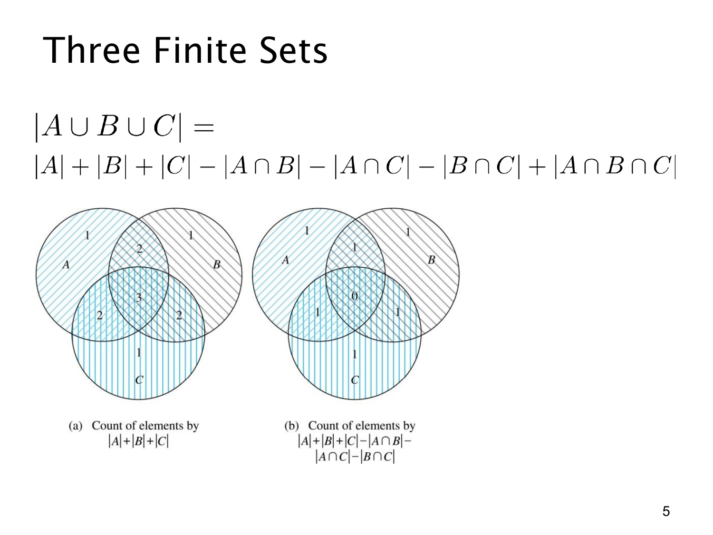

L1.8 · 第 4 页讲解原文
查看这一页课件

减去两两交集后，中央为什么变成 0？
本页用左右两幅图展示容斥计算的中间过程。图里的数字表示每个区域内的元素当前被计算的次数。
左图对应
∣A∣+∣B∣+∣C∣.
一个元素属于几个集合，就被加几次，所以三个圆的独占部分标 1，两圆重叠但不在第三个圆里的部分标 2，中央三圆重叠的部分标 3。
右图进一步减去全部两两交集：
∣A∣+∣B∣+∣C∣−∣A∩B∣−∣A∩C∣−∣B∩C∣.
考虑一个只属于 A 和 B 的元素：它原先被加 2 次，只出现在一个被减的交集 A∩B 中，因此还剩 2−1=1 次，这正是我们要的结果。
然而，中央的元素同时属于三个两两交集。它从原先的 3 次中被减掉 3 次，变成 3−3=0 次。这里的 0 不是说三重交集为空，而是说这个算式把其中的元素漏算了。
为了恢复中央区域的每一个元素，必须再加 ∣A∩B∩C∣。于是完整公式是
∣A∪B∪C∣=∣A∣+∣B∣+∣C∣−∣A∩B∣−∣A∩C∣−∣B∩C∣+∣A∩B∩C∣.
这说明容斥不是“只减重复部分”就结束，而是要持续修正，直到并集内每个元素的净计数都等于 1。